ミリオンゴッド‐神々の軌跡‐ 🆕
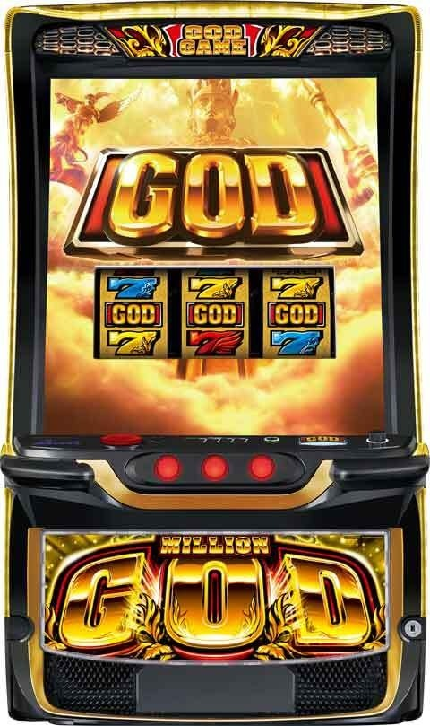

狙い目
※設定1の出率が92.5％とメーカー発表値に比べて大きく下回っている状況です。
※設定1の機械割が92.5％と想定した狙い目です。
【リセット狙い】
慎重派 360Gから
リセット仮天（510G） 400Gから510G+αまで
※仮天と思われる当選分布は520-530Gに集中している
積極派 320Gから
【ゲーム数天井狙い】
※差枚マイナスかつ単発後の狙い目。ここからボーダー調整要因があればボーダーを下げる。
慎重派 710Gから
積極派 670Gから
【天井狙い時のボーダー調整要因】
※以下の条件の場合は甘い傾向。
※以下の条件が重なったら更に強くなるかは不明。現状は重なってもボーダーを加算して下げない方が良さそう。
前回当選G数
1200～1479G当選後 150Gボーダーを下げる
1480G以上（天井）当選後 300G(慎重に行くなら250G）ボーダーを下げる
前回連数
※4連以上でも一撃2500枚以上や、明らかに有利区間切断していそうな履歴の場合は、有利区間切断後想定で120Gボーダーを下げる程度にしておくのが安全そう。
2連後、3連後 30Gボーダーを下げる
4連以上 200Gボーダーを下げる
差枚
※どこで有利区間切断するか不明。差枚+2000枚超えると機械割が落ちる傾向。当日一度でも差枚+2000枚を超えていたら、有利頭の起点が不明になる。
※差枚狙い時は、【差枚狙い時の注意点】を確認。
差枚+2000枚以上（有利区間切断後想定） 120Gボーダーを下げる
差枚+1500～+1999枚 300Gボーダーを下げる
差枚+1000～+1499枚 30Gボーダーを下げる
差枚+500～+999枚 30Gボーダーを下げる
赤7（SGG）当選後
※赤7当選後でも一撃2500枚以上や、明らかに有利区間切断していそうな履歴の場合は、有利区間切断後想定で120Gボーダーを下げる程度にしておくのが安全そう。
赤7（SGG）当選後（前回連荘中にBB履歴あり） 300Gボーダーを下げる
前々回赤7（SGG）当選後（前々回連荘中にBB履歴あり） 140Gボーダーを下げる
3回前赤7（SGG）当選後（3回前連荘中にBB履歴あり） 50Gボーダーを下げる
【ゾーン狙い】
不明
【示唆関連の押し引きについて】
ステージ
アテナステージ、ガイアステージ ステージ転落するまで
【有利区間関連狙い】
同一有利区間差枚+1000から+1500枚 差枚が+1000枚になるまで。やめ時は差枚+1000枚を下回って演出が静かになったらやめ（モード良さそうなら落ちるまで）。
+1501枚から+2000枚でも同様の狙い方は出来そうだが、切断タイミングがハッキリしない。例えば赤7消化後GG当選が1回だけならまだ切断していないので狙えるなどのケースはある。（切断していたら最低2回はGG当選がある）
※差枚狙い時は、【差枚狙い時の注意点】を確認。
※ハマってくると差枚毎での機械割の差が無くなってくる。ただ、赤7当選後の場合は機械割が高いため判断に悩むところ。
※差枚+1501枚以上だと有利区間切断してるケースも含まれる影響か、AT当選まで打ち切りが良さそうな傾向。
【差枚狙い時の注意点】
有利区間切断が絡む場合最低3連以上。差枚+1000枚以上で切断する場合があり、差枚+2000枚を超えたら切断すると思われる。この2つの条件を有利区間切断条件と仮定し、差枚狙いするのが安全。
有利切断絡んだ場合は、初当たりGG→有利切断→切断恩恵GG→ループストックの最低保証で最低3セット出てくる（切断後に最低2連する）。
【設定ベースでのボーダー調整】
設定1のホール割が低すぎて店舗によっては2や3が混ざっているケースもある。店舗によってはボーダーを少し上げる様な立ち回りは有効そう。
ただし、ホールの出率やコイン持ちで設定ベースを判断するのは非常に危険。優良店でも設定1でしっかり回収して他の機種に還元というケースもある。
朝カスや店長カスタムで全台確実にプレートが出る店ならボーダーを下げれそう。
設定1段階ごとに2-3％機械割アップするので、1％毎に20-30Gボーダーを下げる感じ？
下記画像は導入3週間弱での各設定のホール割

参考元 パチ屋の裏研修（Youtube)
やめ時
やめ時最適化(心配な人は37Gまでまわす)
特に前回天井以外の前回単発または前回2連後台の初回連荘告知がG-ZONE(1~5G以内)になければG-ZONE抜け即やめ。ただし、GG中モード示唆があった場合は出目や演出で15G前後で押し引きし強い場合は37Gまで。
初回連荘告知がG-ZONEにある場合または前回3連以上、前回赤7、今回GOD揃い赤７を含む場合は37Gまでまわす。

※初回連荘告知なし即やめの場合は集計値では15回中1回は6~37Gに告知あり。また実践では当選契機を把握できるためより最適化が可能。黄色７やリプ連による単発当選がその1例。小役履歴によるストックの放出はG-ZONE経由が多い。ただしループストック放出はG-ZONE抜けで告知される。仮天井や天井到達時は37やめ
その他
履歴
ART AT
BB 赤7（SGG）
PGGはATで信号が上がる
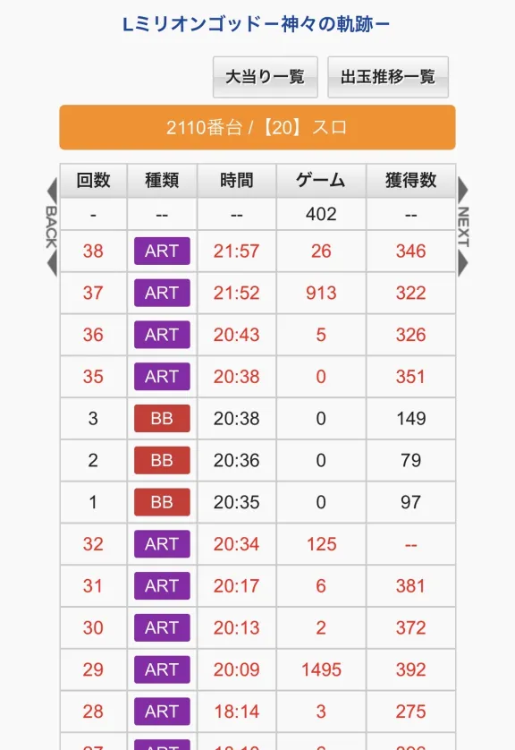
設定変更時の天井振り分け
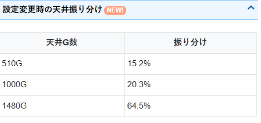
モード
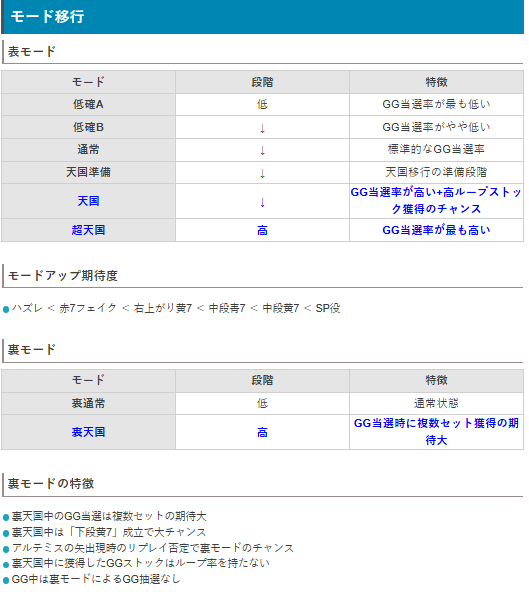
ステージ移行の法則
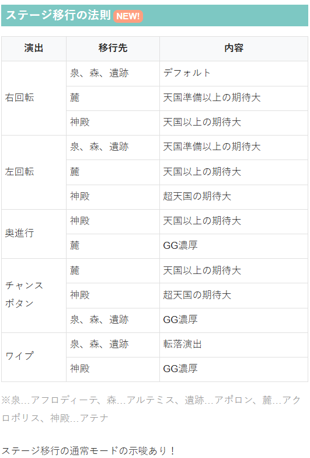
光の風、ブラックホール
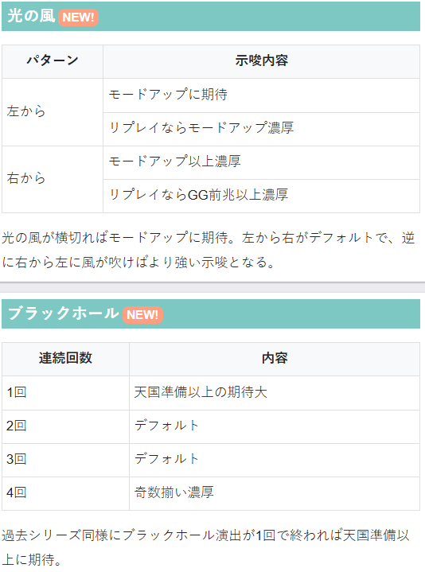
陽炎、遅れ
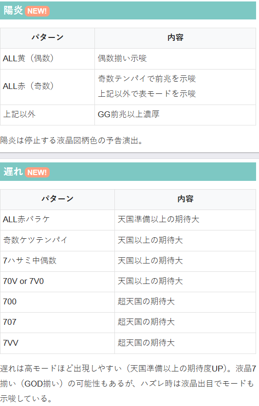
通常ステージ
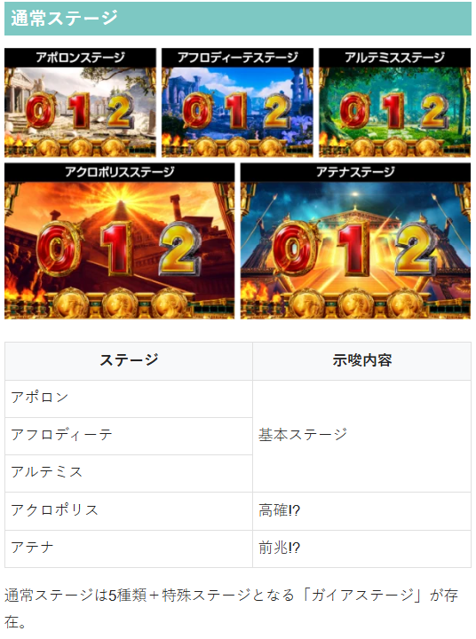
裏モード
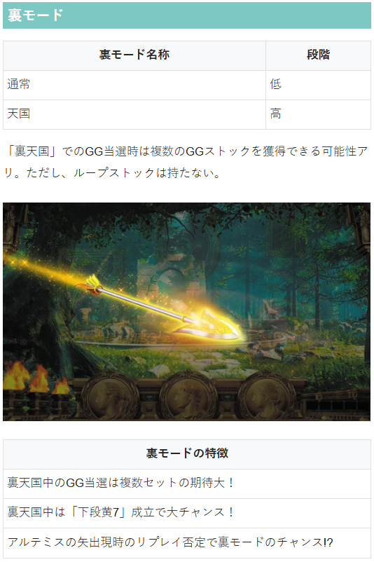
液晶リーチ目
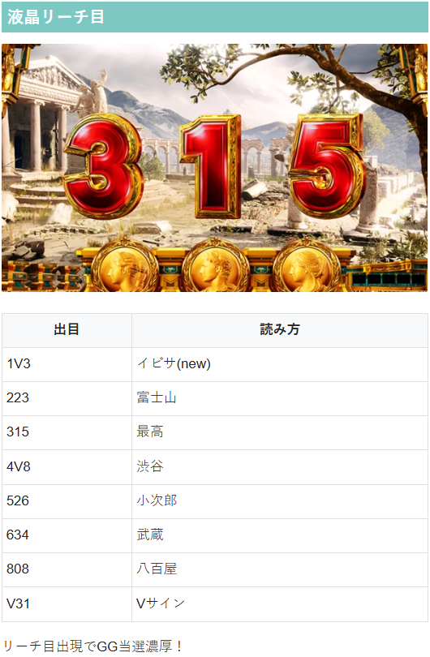
その他の注目出目
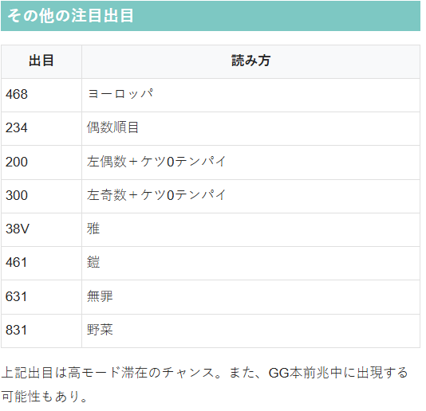
参考元
基本情報
- メーカー: ミズホ
- 機械割: 97.2% 〜 114.6%
- 導入開始日: 2026年04月20日（月）
- ゲーム性概要: ●ミリオンゴッドシリーズがついにスマスロで登場 ●圧倒的な出玉感と洗練されたゲーム性に大注目!!


打ち方
打ち方・小役
打ち方（小役狙い）
［最初に狙う絵柄］ 基本的には全リールフリー打ちでOKだ。
［小役の停止例］
確定役
プレミア役の恩恵
| 役 | 恩恵 |
|---|---|
| GOD揃い | GODステージ50G＋GG3セット ＋強力ループストック |
| 赤7揃い | SGG＋GG1セット＋ループストック |
| SP役 | 当選時の1/2でGGストック1個 ＋ループストック80% |
解析情報通常時
GG抽選関連
表モードごとのGG当選率 低確A・低確B・天国準備滞在時
| 設定 | その他 | 下段黄7 | 中段青7 |
|---|---|---|---|
| 1 | 0.01% | 一 | 0.2% |
| 2 | 0.01% | 一 | 0.2% |
| 3 | 0.01% | 一 | 0.2% |
| 4 | 0.02% | 一 | 0.2% |
| 5 | 0.01% | 一 | 0.2% |
| 6 | 0.04% | 一 | 0.2% |
| 設定 | 右上がり黄7 | 中段黄7 | SP役 |
| 1 | 0.7% | 7.5% | 50.0% |
| 2 | 0.7% | 7.5% | 50.0% |
| 3 | 0.7% | 7.5% | 50.0% |
| 4 | 0.7% | 7.5% | 50.0% |
| 5 | 0.7% | 7.5% | 50.0% |
| 6 | 0.7% | 7.5% | 50.0% |
通常滞在時
| 設定 | その他 | 下段黄7 | 中段青7 |
|---|---|---|---|
| 1 | 0.01% | 一 | 0.3% |
| 2 | 0.02% | 一 | 0.3% |
| 3 | 0.01% | 一 | 0.3% |
| 4 | 0.03% | 一 | 0.3% |
| 5 | 0.01% | 一 | 0.3% |
| 6 | 0.04% | 一 | 0.3% |
| 設定 | 右上がり黄7 | 中段黄7 | SP役 |
| 1 | 3.5% | 15.0% | 50.0% |
| 2 | 3.5% | 15.0% | 50.0% |
| 3 | 3.5% | 15.0% | 50.0% |
| 4 | 3.5% | 15.0% | 50.0% |
| 5 | 3.5% | 15.0% | 50.0% |
| 6 | 3.5% | 15.0% | 50.0% |
天国滞在時
| 設定 | その他 | 下段黄7 | 中段青7 |
|---|---|---|---|
| 1 | 3.4% | 一 | 40.0% |
| 2 | 3.4% | 一 | 40.0% |
| 3 | 3.4% | 一 | 40.0% |
| 4 | 3.4% | 一 | 40.0% |
| 5 | 3.4% | 一 | 40.0% |
| 6 | 3.4% | 一 | 40.0% |
| 設定 | 右上がり黄7 | 中段黄7 | SP役 |
| 1 | 60.0% | 80.0% | 50.0% |
| 2 | 60.0% | 80.0% | 50.0% |
| 3 | 60.0% | 80.0% | 50.0% |
| 4 | 60.0% | 80.0% | 50.0% |
| 5 | 60.0% | 80.0% | 50.0% |
| 6 | 60.0% | 80.0% | 50.0% |
超天国滞在時
| 設定 | その他 | 下段黄7 | 中段青7 |
|---|---|---|---|
| 1 | 5.4% | 一 | 75.0% |
| 2 | 5.4% | 一 | 75.0% |
| 3 | 5.4% | 一 | 75.0% |
| 4 | 5.4% | 一 | 75.0% |
| 5 | 5.4% | 一 | 75.0% |
| 6 | 5.4% | 一 | 75.0% |
| 設定 | 右上がり黄7 | 中段黄7 | SP役 |
| 1 | 80.0% | 90.0% | 50.0% |
| 2 | 80.0% | 90.0% | 50.0% |
| 3 | 80.0% | 90.0% | 50.0% |
| 4 | 80.0% | 90.0% | 50.0% |
| 5 | 80.0% | 90.0% | 50.0% |
| 6 | 80.0% | 90.0% | 50.0% |
※その他…ハズレ・上段青7・赤7フェイク・押し順黄7・ガイアベル
［小役契機］GG当選時のループストック振り分け
| ループ率 | 天国滞在時 | 超天国滞在時 | SP役契機 |
|---|---|---|---|
| 1% | 25.0% | 一 | 一 |
| 25% | 25.0% | 一 | 一 |
| 50% | 46.9% | 75.0% | 一 |
| 80% | 3.1% | 25.0% | 100% |
SP役契機だった場合、滞在している表モード不問で80%ループが選択される。
黄7連続回数別・GG当選率
| 連続回数 | 当選率 |
|---|---|
| 3連 | 0.4% |
| 4連 | 20.3% |
| 5連以上 | 100% |
［小役履歴契機］GG当選時のループストック振り分け
| ループ率 | 青7×3連or4連 | 青7×5連以降 | 黄7×3連以降 |
|---|---|---|---|
| 1% | 99.6% | 50.0% | 41.8% |
| 25% | 一 | 41.8% | 33.2% |
| 50% | 一 | 7.8% | 14.8% |
| 80% | 0.4% | 0.4% | 10.2% |
青7の5連以降はループ率が優遇、黄7連続は3連〜5連以降共通で同じ振り分けで、青7連続よりもループストックが優遇される。
GG本前兆ゲーム数振り分け （告知ゲーム込み）
| 前兆 | その他 | 下段黄7 | 中段青7 |
|---|---|---|---|
| 1G | 一 | 一 | 一 |
| 2G | 0.01% | 0.01% | 0.01% |
| 3G | 0.01% | 0.01% | 0.01% |
| 4G | 3.1% | 1.6% | 1.6% |
| 5G | 0.4% | 1.6% | 5.0% |
| 6G | 0.4% | 1.6% | 5.0% |
| 7G | 0.4% | 1.6% | 5.0% |
| 8G | 0.4% | 1.6% | 5.0% |
| 9G | 4.1% | 7.1% | 7.8% |
| 10G | 4.1% | 7.1% | 7.8% |
| 11G | 4.1% | 7.1% | 7.8% |
| 12G | 7.5% | 13.0% | 14.2% |
| 13G | 9.7% | 12.5% | 5.0% |
| 14G | 9.7% | 12.5% | 5.0% |
| 15G | 9.7% | 12.5% | 5.0% |
| 16G | 9.7% | 12.5% | 5.0% |
| 17G | 26.1% | 6.0% | 19.4% |
| 18G | 0.4% | 0.1% | 0.3% |
| 19G | 0.4% | 0.1% | 0.3% |
| 20G | 0.4% | 0.1% | 0.3% |
| 21G | 2.3% | 0.4% | 0.2% |
| 22G | 2.3% | 0.4% | 0.2% |
| 23G | 2.3% | 0.4% | 0.2% |
| 24G | 2.3% | 0.4% | 0.2% |
| 前兆 | 右上がり＆中段黄7 SP役 | 小役履歴 | 天井到達時 |
| 1G | 一 | 一 | 一 |
| 2G | 0.002% | 一 | 0.01% |
| 3G | 0.002% | 一 | 0.01% |
| 4G | 0.4% | 一 | 1.6% |
| 5G | 0.3% | 一 | 1.6% |
| 6G | 0.3% | 一 | 1.6% |
| 7G | 0.3% | 一 | 1.6% |
| 8G | 0.3% | 一 | 1.6% |
| 9G | 1.9% | 20.7% | 7.1% |
| 10G | 1.9% | 20.7% | 7.1% |
| 11G | 1.9% | 20.7% | 7.1% |
| 12G | 3.6% | 37.9% | 13.0% |
| 13G | 9.4% | 一 | 12.5% |
| 14G | 9.4% | 一 | 12.5% |
| 15G | 9.4% | 一 | 12.5% |
| 16G | 9.4% | 一 | 12.5% |
| 17G | 47.7% | 一 | 6.0% |
| 18G | 0.8% | 一 | 0.1% |
| 19G | 0.8% | 一 | 0.1% |
| 20G | 0.8% | 一 | 0.1% |
| 21G | 0.4% | 一 | 0.4% |
| 22G | 0.4% | 一 | 0.4% |
| 23G | 0.4% | 一 | 0.4% |
| 24G | 0.4% | 一 | 0.4% |
※その他…ハズレ・上段青7・赤7フェイク・押し順黄7・ガイアベル
前兆は最大で24G。小役履歴契機は9〜12Gになる。
Z-ZONE昇格率（非ガイアステージ）
GG当選時に前兆ゲーム数が決まったタイミングでZ-ZONEへの昇格を抽選する。
小役関連
ガイアナビ
ガイアナビ（右ナビ）発生でガイアステージ移行のチャンス。規定回数到達時は滞在しているガイアモードに応じてガイアステージ移行を抽選する。 リール停止後のフラッシュパターンなどでガイアステージ移行期待度や残り回数が示唆される。
小役履歴の抽選
今回も小役履歴（液晶右下に表示）の連続でGGを抽選。青7や黄7がそれぞれ3連続以上すればチャンス。ガイアナビ（右ナビ）時は白7が表示されて、青7・黄7両方の代用として機能する。
青7連続回数別・GG当選率
青7連続は設定の奇偶で当選率が変化する。
［白7が3個以上あると80%のループストック］ 履歴が途切れずに白7が3個以上でGGに当選した場合は80%のループストックを獲得する。 あくまで“途切れず”なので、ハズレを挟んで3個あっても抽選の対象外となるので注意しておこう。
小役確率
| 役 | 確率 |
|---|---|
| ハズレ | 1/5.2 |
| 押し順黄7 | 1/1.7 |
| 上段青7 | 1/7.9 |
| 中段青7 | 1/109.2 |
| 下段黄7 | 1/18.4 |
| 右上がり黄7 | 1/186.2 |
| 中段黄7 | 1/963.8 |
| 共通黄7 | 1/1524.1 |
| ガイアベル | 1/37.6 |
| 赤7フェイク | 1/936.2 |
| 赤7揃い | 1/6900 |
| SP役 | 1/65536 |
| GOD揃い | 1/16384 |
小役確率は全設定共通だ。
モード
表モード概要
表モードの種類
低確A
低確B
通常
天国準備
天国
超天国
6種類のモード（内部状態）によって、通常時の成立役ごとのGG当選率、GG中のGGストック当選率が変化。天国モードに移行すればGG当選＋高ループストック獲得のチャンスだ。
裏モード概要
裏モードのポイント
裏天国中のGG当選で複数セット獲得の期待大
裏天国中の下段黄7は大チャンス！
アルテミスの矢演出で青7を否定すればチャンス
裏天国中にGGが当選すればGG複数ストック当選の期待大。 滞在中は下段黄7成立で大チャンスだ。 表モードと異なり、影響するのは通常時の抽選のみとなる。
［アルテミスの矢演出に注目］ アルテミスの矢演出発生時に青7を否定すればチャンス！
ガイアモード
| 移行契機 | ガイアベル規定回数到達時の抽選 |
|---|---|
| モードの種類 | 低確、通常、天国 |
| モードごとの違い | ガイアベル規定回数や 規定回数到達時のガイアステージ移行率が変化 |
低確、通常、天国の3種類があり、モードに応じてガイアベル規定回数到達時にガイアステージ移行を抽選。 このガイアモードはガイアベル（ガイヤナビ経由）規定回数到達時に抽選される（周期抽選）。
ガイアナビ規定回数振り分け
| 規定回数 | 低確 | 通常 | 天国 | 設定変更 有利区間移行 |
|---|---|---|---|---|
| 1回 | 2.3% | 9.8% | 33.2% | 3.1% |
| 2回 | 0.4% | 0.8% | 33.2% | 5.1% |
| 3回 | 10.2% | 25.0% | 33.6% | 5.1% |
| 4回 | 0.4% | 3.5% | 一 | 5.1% |
| 5回 | 10.2% | 25.0% | 一 | 5.1% |
| 6回 | 0.4% | 3.5% | 一 | 7.8% |
| 7回 | 14.8% | 13.7% | 一 | 7.8% |
| 8回 | 0.8% | 2.0% | 一 | 7.8% |
| 9回 | 15.2% | 7.8% | 一 | 7.8% |
| 10回 | 0.4% | 2.0% | 一 | 9.8% |
| 11回 | 19.1% | 4.3% | 一 | 9.8% |
| 12回 | 0.4% | 0.4% | 一 | 9.8% |
| 13回 | 19.1% | 1.2% | 一 | 9.8% |
| 14回 | 0.4% | 0.4% | 一 | 3.1% |
| 15回 | 5.9% | 0.8% | 一 | 3.1% |
ガイアナビ規定回数到達時のガイアステージ移行率
| ガイアモード | 移行率 |
|---|---|
| 低確 | 10.2% |
| 通常 | 30.1% |
| 天国 | 66.8% |
ガイアモード移行率
| 移行先 | 低確滞在時 | 通常滞在時 | 天国滞在時 |
|---|---|---|---|
| 低確へ | 80.1% | 50.0% | 12.5% |
| 通常へ | 19.5% | 44.9% | 12.5% |
| 天国へ | 0.4% | 5.1% | 75.0% |
天国へ移行すればガイアベルの規定回数が3回以下になるうえ、規定回数到達時のガイアステージ当選率も大幅にアップ。ループ率も75%と高い。
ガイアステージ
ガイアステージ概要
ガイアナビを契機に移行するGGの超高確率状態。成立役ごとの抽選だけでなく、小役履歴の抽選も優遇される。 GG当選時はZ-ZONE突入のチャンスだ（0揃いでZ-ZONE突入）
ガイアステージ性能
| 突入契機 | ガイアナビ発生時の一部 |
|---|---|
| 保障ゲーム数 | 9G |
| 消化中の抽選 | 高確率でGGを抽選 |
| 備考 | 奇数揃いでGG濃厚、0揃いでZ-ZONE |
［奇数揃い］ GG当選濃厚。0揃いに昇格することもある。
［0揃い］ Z-ZONEを経由してGGへ突入する。
［専用演出も満載］ 雷雲やオーロラ演出でGG当選を示唆する。
ガイアステージ中の成立役別・GG当選率
| 役 | 当選率 |
|---|---|
| ハズレ | 1.6% |
| 上段青7 | 1.6% |
| 中段青7 | 50.0% |
| 押し順黄7 | 1.6% |
| 右上がり黄7 | 62.5% |
| 中段黄7 | 100% |
| ガイアベル | 1.6% |
| 赤7フェイク | 1.6% |
| SP役 | 100% |
ガイアステージ中の小役履歴・GG当選率
| 連続回数 | 青7 | 黄7 |
|---|---|---|
| 1回 | 5.9% | 1.2% |
| 2連 | 5.9% | 1.2% |
| 3連 | 25.0% | 10.2% |
| 4連 | 75.0% | 50.0% |
| 5連以上 | 100% | 100% |
ガイアステージ中は表モード不問で、成立役に応じてGGを抽選。さらに、成立役とは別に青7・黄7の小役履歴でもGGが抽選される。
保障ゲーム数3G当選率（残り保障3G以下時）
| 役 | 当選率 |
|---|---|
| ハズレ | 5.3% |
| 上段青7 | 5.3% |
| 中段青7 | 100% |
| 押し順黄7 | 5.3% |
| 右上がり黄7 | 100% |
| 中段黄7 | 一 |
| ガイアベル | 5.3% |
| 赤7フェイク | 5.3% |
| SP役 | 一 |
保障ゲーム数が残り3G以下（初期の保障ゲーム数は9G）の状態では、成立役に応じて保障ゲーム数が3G加算される（当該ゲーム数含め4G）。 ガイアステージ中の中段黄7とSP役はGG濃厚なので、保障ゲーム数は獲得しない。
Z-ZONE抽選
GG当選契機不問で、GG当選時に一定の確率でZ-ZONEを抽選。 設定に応じて当選率が変化!?
GG当選時のZ-ZONE当選率（設定1）
| GG当選契機 | 当選率 |
|---|---|
| 不問 | 15.0% |
ガイアステージ終了抽選（保障ゲーム消化後）
| 役 | 終了 | 継続 |
|---|---|---|
| ハズレ | 12.9% | 87.1% |
| 押し順黄7こぼし | 12.9% | 87.1% |
| その他 | 一 | 100% |
保障ゲーム数（9G）消化後はハズレor押し順黄7こぼし時に転落を抽選。 その他の役（押し順黄7時の黄7揃い含む）成立時は転落を抽選しない。 また、転落時は液晶出目で左黄色のバラケ目になるので、それ以外なら転落の心配はない（転落時は次BETで通常ステージ移行）。
天井
［設定変更時］天井ゲーム数振り分け
| ゲーム数 | 振り分け |
|---|---|
| 510G | 15.2% |
| 1000G | 20.3% |
| 1480G | 64.5% |
天井到達時のループストック振り分け
| ループストック | 振り分け |
|---|---|
| 1% | 16.7% |
| 25% | 16.7% |
| 50% | 16.7% |
| 80% | 16.7% |
| 1%＋Z-ZONE | 33.2% |
天井ゲーム数は3種類あって、抽選で決定。 また、天井到達時はループストック抽選がおこなわれ、約33%でZ-ZONEが付与される。
フリーズ
GOD揃い・ロングフリーズ動画
GOD揃いは実遊技と擬似遊技の2種類あり、ロングフリーズは擬似遊技で発生!?
恩恵はPGG（ループストックあり）突入で、擬似遊技と実遊技のどちらも共通だ。
解析情報ボーナス時
ゴッドゲーム（GG）
GG概要
セット上乗せ型のATで、滞在ステージで内部状態やGGストック数を示唆する。
GG性能
| 突入契機 | 通常時やガイアステージ中の抽選、Z-ZONE後など |
|---|---|
| 継続ゲーム数 | 50G/セット |
| 純増 | 約7枚/G |
| 平均獲得枚数 | 350枚 |
| 消化中の抽選 | セットストックや内部状態移行など |
| 備考 | ループストックは最大80% |
準備中＆GG中のストック抽選
GG準備中・GG中は表モードと成立役を参照してGGストックを抽選。 ちなみに、ガイアベル成立時は押し順ナビが出ず、左1stで押すと下段黄7揃い（15枚）になるのでストックは抽選しない。
［GG準備中］GGストック当選率
| 役 | 低確A | 低確B | 通常 |
|---|---|---|---|
| ハズレ | 一 | 一 | 2.7% |
| 中段青7 | 一 | 一 | 18.8% |
| 右上がり黄7 | 一 | 一 | 33.2% |
| 中段黄7 | 50.0% | 50.0% | 50.0% |
| SP役 | 50.0% | 50.0% | 50.0% |
| 役 | 天国準備 | 天国 | 超天国 |
| ハズレ | 2.7% | 12.7% | 18.9% |
| 中段青7 | 18.8% | 50.0% | 89.8% |
| 右上がり黄7 | 33.2% | 66.8% | 89.8% |
| 中段黄7 | 50.0% | 85.9% | 89.8% |
| SP役 | 50.0% | 50.0% | 50.0% |
GG準備中開始から「×・?・?」が出るまでの間が対象。全体的にストック当選率はGG中より高い。
［GG中］GGストック当選率
| 役 | 低確A | 低確B | 通常 |
|---|---|---|---|
| ハズレ | 一 | 一 | 0.2% |
| 中段青7 | 一 | 一 | 一 |
| 右上がり黄7 | 一 | 一 | 1.2% |
| 中段黄7 | 10.2% | 10.2% | 18.8% |
| SP役 | 50.0% | 50.0% | 50.0% |
| 役 | 天国準備 | 天国 | 超天国 |
| ハズレ | 0.2% | 0.4% | 7.0% |
| 中段青7 | 一 | 1.2% | 33.2% |
| 右上がり黄7 | 3.1% | 15.2% | 50.0% |
| 中段黄7 | 25.0% | 50.0% | 80.1% |
| SP役 | 50.0% | 50.0% | 50.0% |
SP役は状況を問わず、50%でストックを獲得する。
通常告知時 （G-ZONE抜け後） の前兆ゲーム数振り分け
| 前兆 | 振り分け |
|---|---|
| 1G | 一 |
| 2G | 0.02% |
| 3G | 0.02% |
| 4G | 3.9% |
| 5G | 1.6% |
| 6G | 1.6% |
| 7G | 1.6% |
| 8G | 1.6% |
| 9G | 7.8% |
| 10G | 7.8% |
| 11G | 7.8% |
| 12G | 14.2% |
| 13G | 6.3% |
| 14G | 6.3% |
| 15G | 6.3% |
| 16G | 6.3% |
| 17G | 11.9% |
| 18G | 0.2% |
| 19G | 0.2% |
| 20G | 0.2% |
| 21G | 0.4% |
| 22G | 0.4% |
| 23G | 0.4% |
| 24G | 0.4% |
| 25G | 0.2% |
| 26G | 0.2% |
| 27G | 0.2% |
| 28G | 0.2% |
| 29G | 0.05% |
| 30G | 0.05% |
| 31G | 12.4% |
※前兆はG-ZONE中のゲーム数を含まないゲーム数
G-ZONEではなく、通常ステージ中の告知が選択された場合の前兆ゲーム数は上記の通り。 31Gの選択率が高めなので、G-ZONE終了後は31Gまで回すことをオススメだ。
GGストックあり時のZ-ZONE当選率
| 役 | 当選率 |
|---|---|
| 上段青7 | 0.1% |
| 中段青7 | 4.0% |
| 赤7フェイク | 0.1% |
| 右上がり黄7 | 18.0% |
| 中段黄7 | 25.0% |
| SP役 | 30.0% |
GGストックがある場合、成立役を参照してZ-ZONEを抽選。 当選した場合はGG告知時に0が揃ってZ-ZONEへ移行する。
スーパーゴッドゲーム（SGG）
SGG概要
継続型のスペシャルATで、セットごとにゲーム数（10～100G）消化後は3G間の引き戻しゾーンへ突入して、75%以上でループ。ゲーム数によってステージが変化する（消化中のステージ昇格もあり）。
SGG性能
| 突入契機 | 赤7揃い（液晶S揃い） |
|---|---|
| 継続ゲーム数 | 10～100G/セット ＋引き戻しゾーン3G |
| 純増 | 約7枚/G |
| 継続率 | 75%以上 |
| 備考 | 5の倍数セットは20G以上濃厚 |
［引き戻しゾーン］
ゲーム数ごとの対応ステージ
| ゲーム数 | ステージ |
|---|---|
| 10G | 月 |
| 20G | 火星 |
| 30G | 土星 |
| 50G | 冥王星 |
| 100G | 木星 |
月ステージスタートでも内部的に30Gが選ばれていた場合は、増加区間中のステージアップで土星まで昇格する…というように、どのステージでも対応ゲーム数よりも多い可能性がある。
［月］
［火星］
［土星］
［冥王星］
［木星］
ストック・継続抽選
準備中・増加区間はレア役時に継続ストックを抽選。引き戻しゾーン中は全役で継続を抽選する。
継続ストック当選率 SGG準備中（準備中開始から×・?・?が出るまで）
| 役 | ストック1個 | ストック3個 |
|---|---|---|
| 中段青7 | 50.0% | 一 |
| 右上がり黄7 | 50.0% | 一 |
| 中段黄7 | 85.9% | 一 |
| SP役 | 一 | 100% |
増加区間（継続ゾーンまで）
| 役 | ストック1個 | ストック3個 |
|---|---|---|
| 中段青7 | 10.2% | 一 |
| 右上がり黄7 | 10.2% | 一 |
| 中段黄7 | 50.0% | 一 |
| SP役 | 一 | 100% |
［SGG引き戻しゾーン中］継続ストック当選率
| 役 | 当選率 |
|---|---|
| ハズレ・上段青7・押し順黄7・下段黄7 | 34.4% |
| その他（レア役系） | 100% |
引き戻しゾーン中は毎ゲーム、最低でも34.4%で継続に当選する。
ゲーム数抽選
SGGのゲーム数は、継続契機とセット数が5の倍数かどうかで抽選値が変化。 100Gが選ばれた場合は継続ストックを1つ獲得できる。
継続契機ごとのSGGゲーム数振り分け 5の倍数以外のセット
| 役 | 10G | 20G | 30G | 50G | 100G |
|---|---|---|---|---|---|
| ハズレ | 83.0% | 11.4% | 3.4% | 1.1% | 1.1% |
| 上段青7 | 83.0% | 11.4% | 3.4% | 1.1% | 1.1% |
| 中段青7 | 一 | 69.5% | 20.3% | 5.1% | 5.1% |
| 赤7フェイク | 88.3% | 7.8% | 2.3% | 0.8% | 0.8% |
| 押し順黄7 | 83.0% | 11.4% | 3.4% | 1.1% | 1.1% |
| ガイアベル | 88.3% | 7.8% | 2.3% | 0.8% | 0.8% |
| 下段黄7 | 83.0% | 11.4% | 3.4% | 1.1% | 1.1% |
| 右上がり黄7 | 一 | 69.5% | 20.3% | 5.1% | 5.1% |
| 中段黄7 | 一 | 50.0% | 25.0% | 12.5% | 12.5% |
| SP役 | 一 | 一 | 一 | 50.0% | 50.0% |
| GOD揃い | 88.3% | 7.8% | 2.3% | 0.8% | 0.8% |
| 赤7揃い | 88.3% | 7.8% | 2.3% | 0.8% | 0.8% |
| 継続ストック | 88.3% | 7.8% | 2.3% | 0.8% | 0.8% |
5の倍数セット
| 役 | 10G | 20G | 30G | 50G | 100G |
|---|---|---|---|---|---|
| ハズレ | 一 | 79.5% | 13.6% | 3.4% | 3.4% |
| 上段青7 | 一 | 79.5% | 13.6% | 3.4% | 3.4% |
| 中段青7 | 一 | 50.0% | 25.0% | 12.5% | 12.5% |
| 赤7フェイク | 一 | 88.3% | 7.8% | 2.0% | 2.0% |
| 押し順黄7 | 一 | 79.5% | 13.6% | 3.4% | 3.4% |
| ガイアベル | 一 | 88.3% | 7.8% | 2.0% | 2.0% |
| 下段黄7 | 一 | 79.5% | 13.6% | 3.4% | 3.4% |
| 右上がり黄7 | 一 | 50.0% | 25.0% | 12.5% | 12.5% |
| 中段黄7 | 一 | 一 | 50.0% | 25.0% | 25.0% |
| SP役 | 一 | 一 | 一 | 一 | 100% |
| GOD揃い | 一 | 88.3% | 7.8% | 2.0% | 2.0% |
| 赤7揃い | 一 | 88.3% | 7.8% | 2.0% | 2.0% |
| 継続ストック | 一 | 88.3% | 7.8% | 2.0% | 2.0% |
※100G選択時は継続ストックを1個獲得
プレミアムゴッドゲーム（PGG）
PGG概要
GOD揃いから突入する期待値3,000枚超の最強フラグ。 最低でもGG4セット以上を獲得できる。
PGG性能
| 突入契機 | GOD揃い後 |
|---|---|
| GOD揃い確率 | 1/16384.0 |
| 継続ゲーム数 | GG50G＋GG3セット以上 |
| 純増 | 約7枚/G |
| 備考 | 強力なループストックがあるため ロング継続のチャンス |
| 期待枚数 | 3000枚以上 |
Z-ZONE/Z-GAME
Z-ZONE・Z-GAME解説
ガイアステージ経由で移行するGGの上乗せゾーン。 消化中は黄7成立時は黄7の連続が途切れるまでゲーム数減算がストップ、レア役の一部や黄7の5連でZ-GAMEへ移行する（右上がり黄7・中段黄7成立時は黄7の5連扱いになりZ-GAMEへ直行）。
Z-ZONE性能
| 突入契機 | ガイアステージ中のGG当選時の一部など |
|---|---|
| 継続ゲーム数 | 5G＋α |
| 純増 | 約7枚/G |
| 消化中の抽選 | GGストック抽選、Z-GAMEへの移行 |
| 滞在中の黄7確率 | 1/1.4（フルナビ） |
| 備考 | 一度も黄7が成立しなければ特殊抽選が発生 |
［押し順ナビ］ 押し順ナビが発生すれば黄7濃厚だ。
［Z-GAME］ 黄7が揃い続ける限りGGを上乗せ！
Z-ZONE中の特殊抽選当選率
| 状況 | 当選率 |
|---|---|
| チャレンジ失敗までに黄7が成立しなかった場合 | 50.0% |
特殊抽選当選時の恩恵
ループストック80%に当選
Z-ZONEチャレンジ失敗までに一度も黄7が成立しなかった場合、約50%でループストック80%に当選する。
演出情報
確定役時の演出
［通常時］確定役成立時の演出発生割合
| 演出 | 赤7揃い | GOD揃い |
|---|---|---|
| フリーズ（リールロックの合算） | 一 | 30.9% |
| 天空の扉 | 8.8% | 19.8% |
| チャンスボタン（フリーズ移行含む） | 21.3% | 18.7% |
| 太陽の戦車 | 27.3% | 8.4% |
| 神の雷 | 21.0% | 8.1% |
| 図柄巨大化 | 10.1% | 3.4% |
| 遅れ（GODボタン演出含む） | 4.5% | 6.3% |
| 竜巻 | 3.8% | 0.6% |
| 背景プレミア | 一 | 1.1% |
| その他 | 3.2% | 2.7% |
［GG中］確定役成立時の演出発生割合
| 演出 | 赤7揃い | GOD揃い |
|---|---|---|
| フリーズ（リールロックの合算） | 一 | 30.9% |
| 天空の扉 | 17.5% | 18.9% |
| チャンスボタン（フリーズ移行含む） | 14.3% | 21.9% |
| 太陽の戦車 | 25.3% | 6.4% |
| 神の雷 | 16.9% | 8.9% |
| ？ナビ | 4.4% | 2.6% |
| 陽炎 | 3.1% | 1.7% |
| 竜巻 | 6.8% | 0.3% |
| 背景プレミア | 一 | 5.3% |
| 雷 | 5.3% | 一 |
| その他 | 6.4% | 3.1% |
通常時・GG中ともにフリーズ経由の割合が一番高い。
通常時
ステージ解説
［アポロンステージ］
［アフロディーテステージ］
［アルテミスステージ］
［アクロポリスステージ］ 高確状態を示唆する。
［アテナステージ］ 前兆状態！
演出法則
［ステージチェンジ演出］
ステージチェンジ演出
| パターン | 移行先 | 示唆 |
|---|---|---|
| 右回転 | 泉・森・遺跡 | デフォルト |
| 右回転 | 麓 | 天国準備以上の期待大 |
| 右回転 | 神殿 | 天国以上の期待大 |
| 左回転 | 泉・森・遺跡 | 天国準備以上の期待大 |
| 左回転 | 麓 | 天国以上の期待大 |
| 左回転 | 神殿 | 超天国の期待大 |
| 奥進行 | 神殿 | 天国以上の期待大 |
| 奥進行 | 麓 | GG濃厚 |
| チャンスボタン | 麓 | 天国以上の期待大 |
| チャンスボタン | 神殿 | 超天国の期待大 |
| チャンスボタン | 泉・森・遺跡 | GG濃厚 |
| ワイプ | 泉・森・遺跡 | デフォルト（ステージ転落） |
| ワイプ | 神殿 | GG濃厚 |
※泉…アフロディーテ、森…アルテミス、遺跡…アポロン、麓…アクロポリス、神殿…アテナ ※表モード問わず、すべてシナリオ中の可能性あり
［光の風演出］
光の風演出
| パターン | 示唆 |
|---|---|
| 左→右 （デフォルト） | モードアップに期待、 リプレイ成立でモードアップ濃厚 |
| 右→左 （逆パターン） | モードアップ以上濃厚、 リプレイ成立でGG前兆以上濃厚 |
［ブラックホール演出］
ブラックホール演出
| 連続回数 | 示唆 |
|---|---|
| 1回 | 天国準備以上の期待大 |
| 2連 | デフォルト |
| 3連 | デフォルト |
| 4連 | 奇数揃い濃厚（GG以上） |
テンパイ数字の法則
| 1G目 | 2G目 | 3G目 | 示唆 |
|---|---|---|---|
| 5 | 5 | 5 | 継続に期待 |
| 1 | 3 | 5 | 継続濃厚 |
| 3 | 1 | 5 | 継続濃厚 |
| 1 | V | 3 | 継続かつV揃いに期待 |
| V | 3 | 1 | 継続かつV揃いに期待 |
| 5 | V | 0 | 継続かつVor0揃いに期待 |
| V | V | V | 継続かつV揃い濃厚 |
3連目までのテンパイ数字で期待度が変化する。
ブラックホールのその他法則
| パターン | 示唆 |
|---|---|
| ケツがVor7or0 | 継続濃厚 |
| 鏡 | 奇数揃い濃厚 |
| 奇数非テンパイ | GG前兆以上濃厚 |
［陽炎演出］
陽炎演出
| パターン | 示唆 |
|---|---|
| ALL黄色（偶数） | 偶数揃い濃厚、 ハズレの場合はガイアモード天国 ＋規定回数が残り1回の期待大 |
| ALL赤色（奇数） | 奇数テンパイで前兆示唆、その他は表モード示唆 |
| その他 | GG前兆以上濃厚 |
［鏡演出］
鏡演出
| 鏡の出現位置 | 示唆 |
|---|---|
| 左のみ | 奇数テンパイ |
| 左＆中 | 奇数揃い濃厚 |
| 左のみ＋奇数非テンパイ | GG前兆濃厚 |
［図柄巨大化演出］
図柄巨大化演出
| パターン | 示唆 |
|---|---|
| 3G以上連続（赤7フェイクorSP役時を除く） | 奇数揃い濃厚 |
| ケツがV | 大チャンス |
| ケツが7or0 | GG前兆濃厚 |
確定役煽りor前兆終盤に発生。連続するほど期待度がアップする。
［消灯演出］
消灯演出
| パターン | 示唆 |
|---|---|
| 1消灯のみで奇数テンパイ | GG前兆濃厚 |
第3停止時の消灯で心臓演出に発展する。
［心臓演出］
心臓演出
| パターン | 示唆 |
|---|---|
| Low→Hi | デフォルト |
| Low→Hi→Hi | チャンス |
| Low→Hi→SHi | GG濃厚 |
| Low→SHi | GG濃厚 |
| Lowのみ | GG濃厚 |
| 奇数テンパイ | チャンス |
| 第3停止時にいきなり消灯 | チャンス |
鼓動パターン（Low＜Hi＜SHiの順に速い）の組み合わせで期待度が変化。
［氷演出］
氷演出
| パターン | 示唆 |
|---|---|
| リール回転開始時に発生 | デフォルト |
| レバーON時のLED発光→第1停止時に発生 | チャンス |
| 第1停止時に発生 | 大チャンス |
| 凍結2個 | 右上がり黄7or中段黄7 |
| 凍結3個 | チャンス |
連続するほどチャンス。絵柄がすべて凍結した時はチャンスボタンから奇数揃いへ変換するチャンスとなる。
［雷演出］
雷演出
| パターン | 示唆 |
|---|---|
| リール回転開始時に発生 | デフォルト |
| レバーON時のLED発光→第1停止時に発生 | チャンス |
| 第1停止時に発生 | チャンス |
| 奇数非テンパイ | 裏モード示唆 |
奇数テンパイ時の一部で発生。連続するほど期待度がアップする。
［竜巻発展演出］
竜巻発展演出
| パターン | 示唆 |
|---|---|
| 奇数＋偶数がある | デフォルト |
| 奇数のみ＆7絵柄なし | チャンス |
| 奇数のみ＆7絵柄あり | GG濃厚 |
| 発展告知時の停止絵柄がALL奇数 | 奇数のみに発展 ※矛盾でGG前兆濃厚 |
| 演出発生なしから第3停止時に発展告知 | 奇数のみに発展 ※矛盾でGG前兆濃厚 |
| 竜巻演出から発展 | 大チャンス |
砂嵐演出から派生する1Gジャッジ（リール回転開始時時に発生する竜巻演出とは別）。 発展告知時から竜巻の中で回っている絵柄の種類で期待度が示唆される。
［遅れ］
遅れ
| 停止絵柄パターン | 示唆 |
|---|---|
| ALL赤色（バラケ目） | 天国準備以上の期待大 |
| 奇数ケツテンパイ | 天国以上の期待大 |
| 7ハサミの中に偶数 | 天国以上の期待大 |
| 7V0or70V | 天国以上の期待大 |
| 700 | 超天国の期待大 |
| 707 | 超天国の期待大 |
| 7VV | 超天国の期待大 |
［炎・戦車演出］
炎・戦車演出
| パターン | 示唆 |
|---|---|
| SU1（炎） | レア役以上（赤7フェイク以外） |
| SU2（強炎） | レア役以上（中段青7以外） |
| SU3（戦車） | 中段黄7orSP役以上 |
| SU4（戦車＋3絵柄） | 赤7フェイクorSP役以上 |
| LED＋炎 | レア役以上 |
SU4の確定役（赤7揃いorGOD）期待度
| 発生状況 | 期待度 |
|---|---|
| 通常時 | 45.0% |
| GG中 | 56.4% |
発生した時点でレア役以上濃厚。SU4は確定役（赤7揃いorGOD）成立の大チャンスだ。
［天空の扉演出］
天空の扉演出
| パターン | 示唆 |
|---|---|
| 左中段にGOD停止（通常時のみ） | GOD濃厚 |
| 順押しで赤7平行テンパイ（中段除く） | 赤7揃い濃厚 |
| チャンスボタン経由（GG中のみ） | 95.5%で確定役 |
| チャンスボタン経由＋金扉（GG中のみ） | 確定役濃厚 |
発生時の確定役（赤7揃いorGOD）期待度
| 発生状況 | 期待度 |
|---|---|
| 通常時 | 64.6% |
| GG中 | 67.7% |
今回も天空の扉は大チャンス。赤扉がデフォルト、金扉はGODの期待大だ。
［神の雷演出］
神の雷演出
| パターン | 示唆 |
|---|---|
| LED＋第1停止時に導入（通常時のみ） | 確定役orGG前兆以上濃厚 |
| 赤7フェイクおよびSP役以外成立 | GG前兆以上濃厚 |
発生時の確定役（赤7揃いorGOD）期待度
| 発生状況 | 期待度 |
|---|---|
| 通常時 | 53.5% |
| GG中 | 55.5% |
［チャンスボタン演出］
チャンスボタン演出
| パターン | 示唆 |
|---|---|
| CHANCE | レア役濃厚 ※赤7フェイクは順押し平行テンパイ（中段除く） |
| 激熱 | 中段黄7or赤7フェイクorSP役濃厚 ※赤7フェイクは順押し斜めテンパイ |
| アクロポリスステージ移行 | チャンスかつ天国以上の期待大 |
| アテナステージ移行 | 大チャンスかつ超天国の期待大 |
激熱の確定役（赤7揃いorGOD）期待度
| 発生状況 | 期待度 |
|---|---|
| 通常時 | 54.8% |
| GG中 | 70.0% |
［LEDの点灯パターン］
レバーON時のLEDパターン
| パターン | 示唆 |
|---|---|
| 下から上 | デフォルト |
| 下から上→逆サイドまで | 炎演出なら赤7フェイク以上、 その他はGG前兆以上濃厚 |
| 下から上の違和感パターン | GOD濃厚 |
ガイアナビ時の法則
［ガイアナビ時の液晶出目］
液晶出目の示唆
| 液晶出目 | 上位のガイアモード期待度序列 |
|---|---|
| 0頭 | 低 |
| 0頭奇数 | ↓ |
| 0頭奇数ケツテンパイ | ↓ |
| 0ハサミ偶数 | 高 |
| 0ハサミ奇数 | ガイアモード天国濃厚 |
| 0V7 or 07V | ガイアモード天国濃厚 |
ガイアナビ発生時に停止する液晶出目のパターンでガイアモードを示唆。 天国中はガイアナビ規定回数到達時のガイアモード移行率が大幅にアップする。
［ガイアナビ時のリールフラッシュ］
リールフラッシュの示唆
| フラッシュ | 示唆 |
|---|---|
| 風 | デフォルト |
| スコール | 規定回数残り3回以下に期待 |
| 台風 | 規定回数到達orGG前兆濃厚 |
| 落雷SP | ガイアステージorZ-ZONE前兆濃厚 |
| 上段青7or下段黄7時に 上記フラッシュのいずれかが発生 | GG前兆濃厚 |
| 風＋0V7 or 07V | ガイアステージorZ-ZONE前兆濃厚 |
発生するリールフラッシュで残り規定回数や前兆、ガイアステージ移行を示唆する。
特定演出の発生確率
| パターン | その他 | 裏天国中 |
|---|---|---|
| 雷+奇数非テンパイ | 1/2794.9 | 1/26.6 |
| アルテミスの矢+上段青7否定 | 1/5122.8 | 1/38.8 |
裏天国濃厚パターン
地震＋下段黄7（3枚）＋偶数テンパイハズレ
上記のパターン発生時は裏天国中の可能性がアップ。 地震＋下段黄7（3枚）＋偶数テンパイハズレは裏天国濃厚だ。
液晶出目
期待度＆前兆示唆の出目
| 出目 | 期待度序列 |
|---|---|
| 奇数テンパイ | 低 |
| 奇数のみ | ↓ |
| 左偶数＋ケツ奇数テンパイ | ↓ |
| 左奇数＋ケツ奇数テンパイ | ↓ |
| 奇数頭の順目 | ↓ |
| 奇数ハサミ（中も奇数） | ↓ |
| Vハサミ（中は奇数） | 高 |
リーチ目（GG本前兆濃厚）
1V3（イビサ島）
223（富士山）
315（最高）
4V8（渋谷）
526（小次郎）
634（武蔵）
808（八百屋）
V31（Vサイン）
その他の注目出目（高モード滞在示唆）
偶数頭の順目
左偶数＋ケツ0テンパイ
左奇数＋ケツ0テンパイ
38V（雅）
461（鎧）
468（ヨーロッパ）
631（無罪）
831（野菜）
ガイアステージ
演出法則
［雷雲演出］
雷雲演出のポイント
弱パターンは雲のみ、中パターンは雷雨、強パターンは雷雨＋剣
中パターンは上段青7でチャンス、 液晶出目の奇数テンパイ以外ならGG前兆以上濃厚
強パターンはプレミア役or中段黄7or赤7フェイクの一部で発生、 それ以外の役ならGG濃厚かつZ-ZONEのチャンス
弱・中・強の3パターンがあり、基本的に連続して発生するほどチャンス。 上画像のように雷雨＋剣が出現する強パターンは期待大だ。
［オーロラ演出］
オーロラ演出のポイント
上段青7、中段青7、右上がり黄7の一部で発生、 それ以外の役ならGG前兆以上濃厚
レア役示唆演出で、上段青7だった場合でもチャンスとなる。
［満月演出］
満月演出のポイント
4G続けばZ-ZONE濃厚
右上がり黄7or中段黄7以外で発生すれば継続のチャンス
満月演出の成立役割合 （非連続中）
| 役 | 割合 |
|---|---|
| その他 | 35.5% |
| 右上がり黄7 | 37.1% |
| 中段黄7 | 27.3% |
4G連続すればZ-ZONE（0揃い）濃厚。右上がり黄7or中段黄7成立のチャンスでもある。
［出目系の示唆］
液晶出目の示唆
| 液晶出目 | 期待度序列 |
|---|---|
| 奇数テンパイ | 中 |
| 0ハサミ中偶数 | ↓ |
| 左0ケツ奇数テンパイ | ↓ |
| 奇数ハサミ中0 | ↓ |
| 0テンパイ右偶数 | ↓ |
| 0ハサミ奇数 | ↓ |
| 0テンパイ右奇数 | 高 |
0テンパイはZ-ZONEのチャンスだ。
AT関連
GG中のステージ示唆
| ステージ | 示唆 |
|---|---|
| オリンポスステージ | デフォルト |
| ポセイドンステージ | 通常以上、GGストック1個以上 |
| ゼウスステージ | 天国以上、GGストック1個以上 |
| GODステージ | GOD揃い後の専用ステージ |
［オリンポスステージ］
［ポセイドンステージ］
［ゼウスステージ］
［GODステージ］
SGG中の演出法則
［ワープ演出］
ワープ演出の法則
| 発生タイミングなど | 示唆 |
|---|---|
| リール回転開始時 | デフォルト |
| 最終ゲーム | フェイク時は必ず発生 |
| 3G連続で発生 | ステージアップ濃厚 |
| レバーON時 | ステージアップ濃厚 |
| 最終ゲームかつ第3停止後に発生 | ステージアップ濃厚 |
| 残り3Gから2G連続で発生 | 最終ゲームでステージアップ濃厚 |
| 最終ゲーム以外で第3停止後に発生 | 2ステージアップ以上濃厚 |
| 3G連続で発生→失敗→4G目に成功 | 2ステージアップ以上濃厚 |
※残り3G…レバーON後の表示が8G、18G、28G、48G
基本的にこのワープ演出を経由してステージがアップする。
［氷演出］
氷演出の成立役別示唆
| 役 | 示唆 |
|---|---|
| 中段青7・右上がり黄7・中段黄7 | 継続ストック濃厚 |
| ハズレ | ステージアップあり示唆 |
［？ナビ演出］
？ナビ演出の成立役別示唆
| 役 | 示唆 |
|---|---|
| レア役 | 継続ストック濃厚 |
| 上段青7・下段黄7(3枚) | ステージアップあり濃厚 |
［チャンスボタン演出］
チャンスボタン演出の法則
| パターン | 示唆 |
|---|---|
| 激熱表示 | 確定役成立期待度：62.9% |
| 中段黄色7＋激熱表示 | 継続ストック濃厚 |
［巨大隕石演出］
巨大隕石演出の確定役成立期待度
| パターン | 確定役成立期待度 |
|---|---|
| 巨大隕石発生時点 | 80.7% |
［移行ステージ］
SGG開始時のステージ別示唆
| パターン | 示唆 |
|---|---|
| 5の倍数セットで月ステージスタート | 50G以上の チャンス |
| 継続契機役が中段青7or右上がり黄7or中段黄7で 月ステージスタート | 50G以上の チャンス |
上記のパターンは10G（月ステージ）スタートだが、ステージアップで最終的に50G（冥王星）以上になる期待大だ。
GGストック個数示唆
V揃いはストック3個以上、アメイジンググレイスが流れた場合はストック5個以上濃厚だ。
GG中のパターン別のストック個数
| パターン | 示唆 |
|---|---|
| 奇数揃い | ストック1個以上 |
| V揃い | ストック3個以上 |
| アメイジンググレイスが流れる | ストック5個以上 |
GG中のBGM
| NO. | 連チャン数 |
|---|---|
| NO.1 | 1～4回 |
| NO.2 | 5～9回 |
| NO.3 | 10～14回 |
| NO.4 | 15～19回 |
| NO.5 | 20～24回 |
25連目はNO.1に戻り、5セット毎の変化を繰り返す。
アメイジンググレイスの恩恵まとめ
| 状態 | 恩恵 |
|---|---|
| GG中 | 残り5セット以上 |
| GG中2セット連続 | 1回目に変化したセットから 残り10セット以上かつ大量ストックの期待大 |
| G-ZONEまで 貫通して流れる | 貫通した次セットから残り10セット以上 |
| 通常時 | 5セット以上 |
当該セットは含まないので、GG中なら最低でも流れたセットから5セット（当該含めて6セット）以上継続。 通常時のアメイジンググレイスは前兆中の一部（告知ゲームを除く）で発生する可能性がある。
G-ZONE中の演出シナリオ LV1
| 1G目 | 2G目 | 3G目 | 4G目 | 5G目 |
|---|---|---|---|---|
| 奇数テンパイ | 一 | 奇数テンパイ | 一 | 奇数テンパイ or 奇数揃い |
| 一 | 奇数テンパイ | 一 | 奇数テンパイ | 奇数テンパイ or 奇数揃い |
| 一 | 一 | 一 | 奇数テンパイ | 奇数テンパイ or 奇数揃い |
LV2
| 1G目 | 2G目 | 3G目 | 4G目 | 5G目 |
|---|---|---|---|---|
| 一 | 一 | 一 | 奇数テンパイ | 奇数テンパイ or 奇数揃い |
| 一 | 一 | 奇数テンパイ | 奇数テンパイ | 奇数テンパイ or 奇数揃い |
| 一 | 奇数テンパイ | 奇数テンパイ | 一 | 奇数テンパイ or 奇数揃い |
| 奇数テンパイ | 一 | 一 | 一 | 奇数テンパイ or 奇数揃い |
LV3（GG継続期待度：約70%）
| 1G目 | 2G目 | 3G目 | 4G目 | 5G目 |
|---|---|---|---|---|
| 奇数テンパイ | 奇数テンパイ | 一 | 一 | 奇数テンパイ or 奇数揃い |
| 奇数テンパイ | 一 | 一 | 奇数テンパイ | 奇数テンパイ or 奇数揃い |
| 一 | 奇数テンパイ | 一 | 一 | 奇数テンパイ or 奇数揃い |
LV4（GG継続期待度：85%以上）
| 1G目 | 2G目 | 3G目 | 4G目 | 5G目 |
|---|---|---|---|---|
| 奇数テンパイ | 一 | 奇数テンパイ | 奇数テンパイ | 奇数テンパイ or 奇数揃い |
| 一 | 奇数テンパイ | 奇数テンパイ | 奇数テンパイ | 奇数テンパイ or 奇数揃い |
| 奇数テンパイ | 奇数テンパイ | 一 | 奇数テンパイ | 奇数テンパイ or 奇数揃い |
| 奇数テンパイ | 奇数テンパイ | 奇数テンパイ | 一 | 奇数テンパイ or 奇数揃い |
LV5（GG継続濃厚）
| 1G目 | 2G目 | 3G目 | 4G目 | 5G目 |
|---|---|---|---|---|
| 一 | 一 | 一 | 一 | 奇数揃い |
| 奇数テンパイ | 奇数テンパイ | 奇数テンパイ | 奇数テンパイ | 奇数揃い |
※黄7の一部で奇数テンパイが偶数揃いに変化
1〜4Gまでオールテンパイなしorオール奇数テンパイならLV5＝GG濃厚になる。
その他のパターン別・GG継続期待度
| パターン | GG継続期待度 |
|---|---|
| 1～4G目に鏡発生 | 期待度アップ |
| 5G目に鏡発生 | 約80% |
| 奇数テンパイ→ケツV | 約90% |
| 奇数テンパイ→ケツ7 | 97.5% |
| 奇数テンパイ→ケツ0 | 99.5% |
| 下段黄7＋偶数揃い | 97.5% |
| 押し順ナビ＋黄7ハズレ | GG継続濃厚 |
| モード示唆出目出現 | GG継続濃厚 |
※モード示唆出目…奇数はさみ中奇数、Vはさみ中奇数など
モード示唆出目はGG継続濃厚。ただし、法則崩れ的な要素なので、実際に表モードを示唆するわけではない。
最終ゲームの法則
奇数テンパイ→ケツ偶数がデフォルト
奇数テンパイ→ケツ偶数や偶数揃い以外は潜伏濃厚
最終ゲームは基本的に奇数テンパイ＋偶数絵柄でハズれるのがデフォルト。 奇数テンパイなしや奇数テンパイ→ケツ奇数といったそれ以外のパターンは通常告知（潜伏→31G以内の告知）濃厚だ。
裏ボタン
ユニメモログイン時専用の裏ボタン
ユニメモのパスワードログイン時限定で、特定タイミングでGODボタンを押すと、上部LEDのフラッシュで様々なものが示唆される。
［GG開始画面］
［GG開始画面］ GGループストック種別・GGストック示唆
| 入力タイミング | GG入賞画面の第3停止後～次ゲームBETまで |
|---|---|
| 入力手順 | GODボタンをPUSH |
| 効果 | LEDの色で初当りGG時はループストック種別、 GG継続時はGGストックの有無を示唆 |
| ランプの色別序列 | 白＜青＜黄＜緑＜赤＜虹 |
LEDごとの示唆
| LED | 示唆 |
|---|---|
| なし | 裏天国当選＋ストック1個以上濃厚 |
| 白 | デフォルト |
| 青 | ループストック25%以上のチャンス |
| 黄 | ストックがあった場合はループストック25%or80%濃厚 （※） |
| 緑 | ループストック50%以上濃厚 |
| 赤 | ループストック50%以上濃厚＋ストック数に期待 |
| 虹 | ループストック80%＋ストック1個以上濃厚 |
※GG中の上乗せを除く
GG入賞画面（告知ゲーム）の第3停止後（次BETまで）にGODボタンを押すと、上部LEDの色で「初当り時はループストックの種別」を、GG引き戻し時は「GGストックの有無」が示唆される。
［GG終了画面］
［GG終了画面］GGストック示唆
| 入力タイミング | GG終了画面の第3停止後～次ゲームBETまで |
|---|---|
| 入力手順 | GODボタンをPUSH |
| 効果 | 発光で GG ストックを示唆 |
LEDごとのGG継続期待度
| LED | 期待度 |
|---|---|
| 白 | 約10% |
| 青 | 約25% |
| 黄 | 約50% |
| 緑 | 約75% |
| 赤 | 100% |
| 虹 | ストック3個以上濃厚 |
［SGG引き戻しゾーン中］
［SGG引き戻しゾーン中］継続示唆
| 入力タイミング | SGG引き戻しゾーンの毎ゲーム レバーON時～次ゲームBETまで |
|---|---|
| 入力手順 | GODボタンをPUSH |
| 効果 | LED発光で継続濃厚、 色で次回セットのゲーム数を示唆 |
LEDごとの示唆
| LED | 示唆 |
|---|---|
| なし | SGG当選時は20G否定（10Gor30G以上） |
| 白 | SGG当選濃厚 |
| 青 | SGG当選＋20G以上濃厚 |
| 黄 | SGG当選＋20G以上濃厚かつ50G否定 |
| 緑 | SGG当選＋30G以上濃厚 |
| 赤 | SGG当選＋50Gor100G濃厚（比率は1：1） |
| 虹 | SGG当選＋100G濃厚 |
［Z-ZONE・Z-GAME中］
［Z-ZONE・Z-GAME中］黄7成立示唆
| 入力タイミング | Z-ZONE・Z-GAMEの毎ゲーム レバーON時～第3停止まで |
|---|---|
| 入力手順 | GODボタンをPUSH |
| 効果 | LED発光で黄7成立濃厚 |
LEDごとの示唆
| LED | 示唆 |
|---|---|
| 白 | 黄7以上濃厚 |
| 黄 | レアな黄色7濃厚（右上がり黄7・中段黄7など） |
※Z-GAME中は白点灯のみ
チャンスボタン演出のLED
チャンスボタン演出発生時にGODボタンを押すと、枠LEDの点灯パターンで3段階のレベルに分岐。 レベルによって成立役などが示唆される。 枠LEDが光らなければGOD揃い濃厚だ。
チャンスボタン演出の裏ボタン
| 手順 | チャンスボタン演出発生時にGODボタンをPUSH |
|---|---|
| 効果 | 枠LEDのパターンでレベルを示唆 |
枠LEDのレベル
| レベル | 枠LED点灯パターン |
|---|---|
| 1 | リール上部付近まで点灯 |
| 2 | サイド上部付近まで点灯 |
| 3 | 枠LEDが全て点灯 |
| なし | 枠LEDが点灯しない |
レベルごとのPUSH後パターン割合
| パターン | LV1 | LV2 | LV3 | なし |
|---|---|---|---|---|
| CHANCE | 91.3% | 93.3% | 78.5% | 43.0% |
| 激熱 | 0.1% | 6.7% | 20.7% | 5.3% |
| 確定系 | 0.003% | 0.01% | 0.9% | 51.7% |
| ステージチェンジ | 8.6% | 0.002% | 0.01% | 一 |
レベルごとの対応役
| レベル | 対応役 |
|---|---|
| 1 | 中段青7、右上がり黄7、中段黄7、 赤7フェイク（順押し平行）、赤7揃い、GOD揃い |
| 2 | 右上がり黄7、中段黄7、赤7揃い、GOD揃い |
| 3 | 中段黄7、赤7フェイク（斜め）、SP役、 赤7揃い、GOD揃い |
| なし | GOD揃い |
※GG本前兆中はハズレもあり
その他のレベル別法則
| レベル | 法則 |
|---|---|
| 1 | 赤7が斜めテンパイすれば赤7揃い濃厚、 激熱表示発生で確定役濃厚 |
| 2 | 赤7が止まれば赤7揃い濃厚、 ステージチェンジ発生でGOD揃い濃厚 |
| 3 | 赤7が中段以外に平行テンパイすれば赤7揃い濃厚、 ステージチェンジ発生でGOD揃い濃厚 |
その他
ユニメモの特典
ユニメモにログインしながらプレイすると、遊技データだけでなく、BGMカスタムや日付を跨いでのGOD間ゲーム数、特殊な裏ボタンなどを楽しむことができる。
遊技データ以外のユニメモ特典
詳細カスタム［ユニメモログイン専用］
GG中のBGMをステージごとに選択可能。 遊技を進めることでBGMが開放されていく
MyGOD間［ユニメモログイン・パスワードログイン専用］
自分だけのGOD間ゲーム数カウンター。 さらにパスワードログインすることで日付を跨いでカウントが可能
裏ボタンカスタム［パスワードログイン専用］
GG入賞画面・GG終了画面・SGG引き戻しゾーン・Z-ZONEで GODボタンを押すと液晶上側の左右ランプフラッシュで何かを示唆！
遅れカスタム［パスワードログイン専用］
遅れ発生時の「スタート音が遅れる間隔」を変更可能
※裏ボタンカスタムのGODボタンは画面タッチでもOK